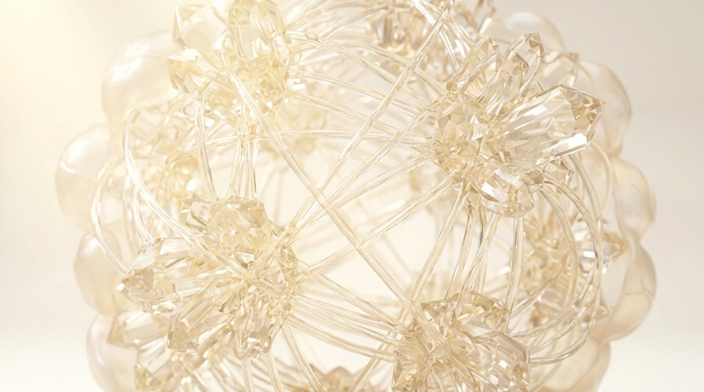
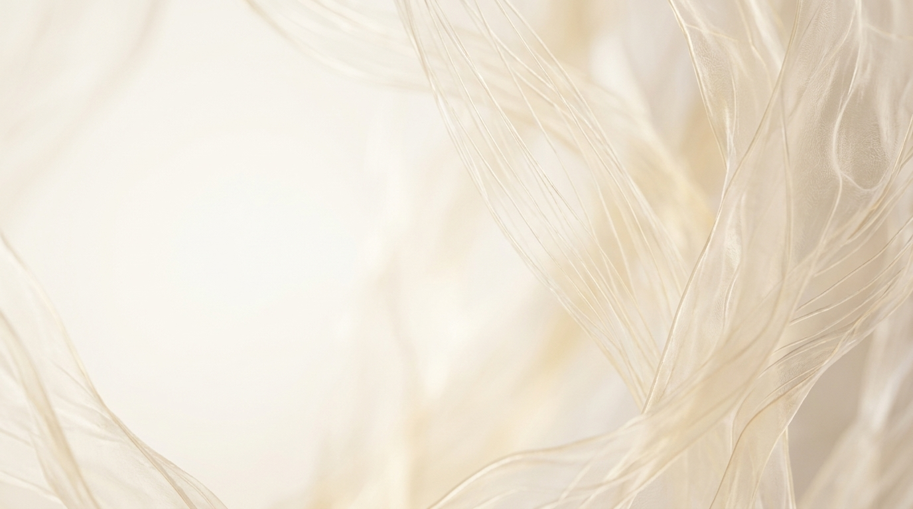
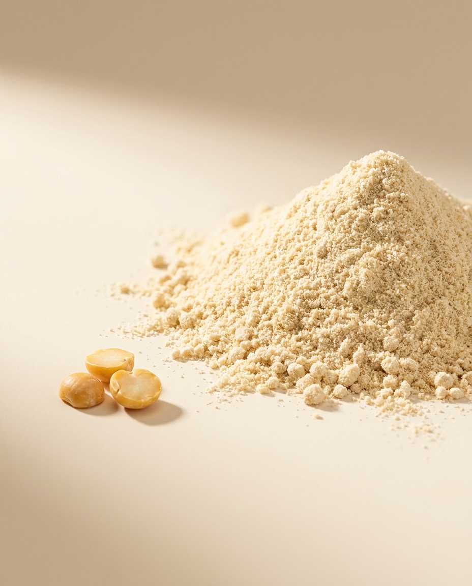
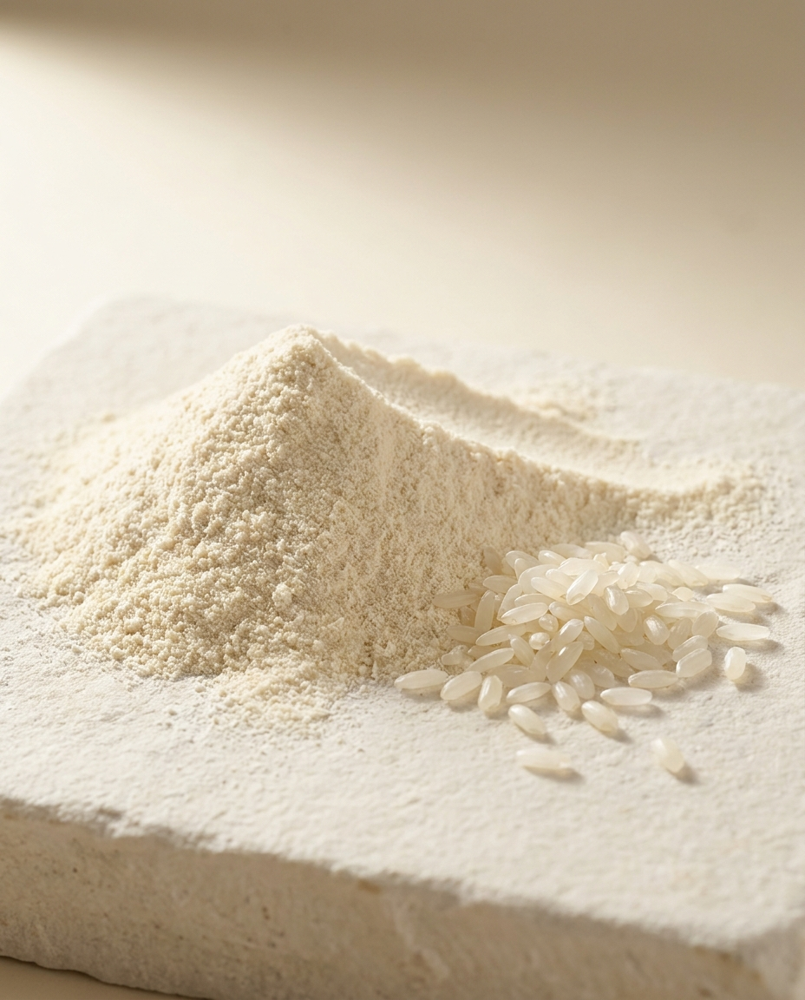
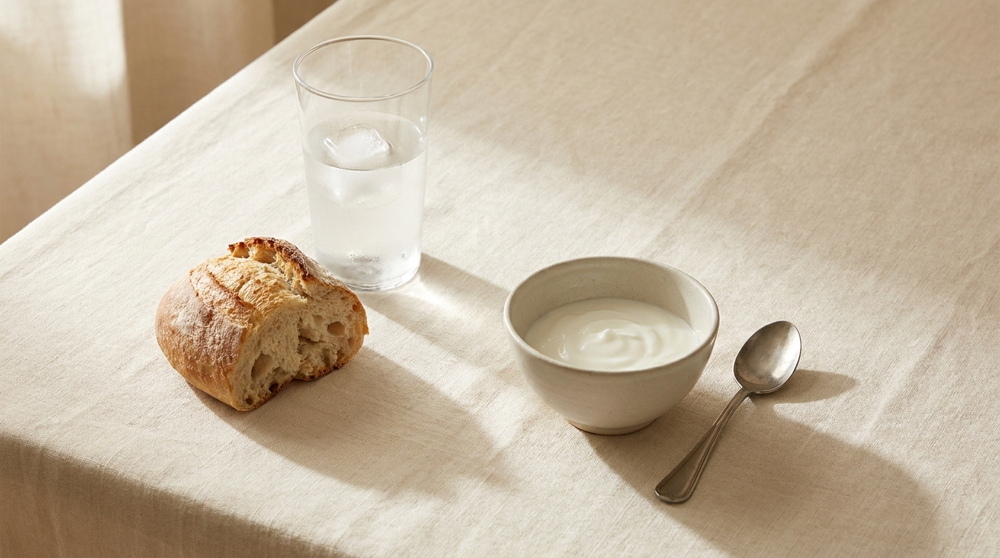

RYUVITA — A NUTRITION TECHNOLOGY COMPANY
Nature, understood completely.
We read the architecture of plants at the molecular level — and refine it, gently, into human health.


soluble fibre network translucent cell matrix refined starch lattice
≈ 85 % protein neutral taste
hypoallergenic infant-grade purity